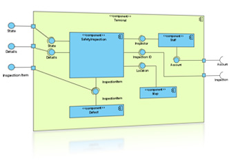
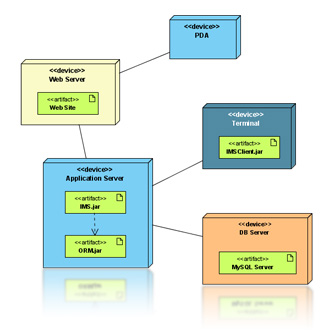
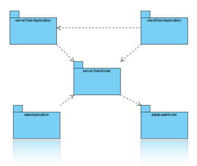
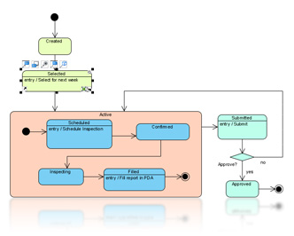
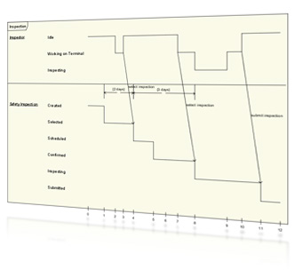
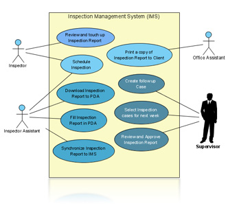
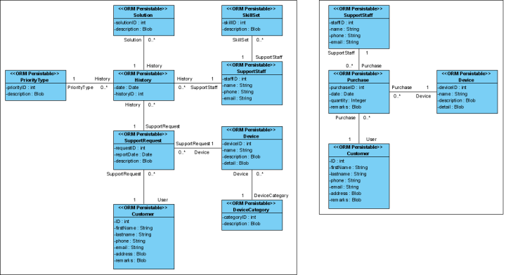
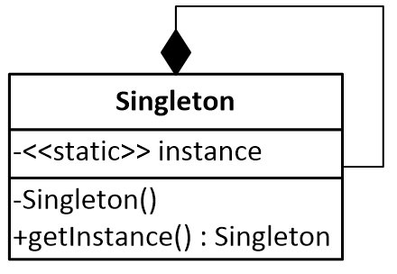
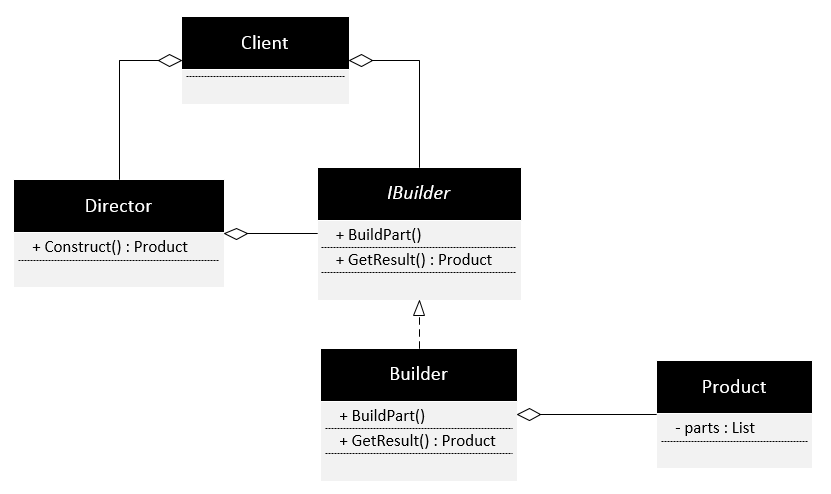

design patterns in action
www.gdgpardubice.cz
Kdo jsme?
Co je to DPA?
Výhled?
Proč jsem tady?
1# DPA
Seznámení s návrhovými vzory
Historie návrhových vzorů
Prolétnutí UML
Platforma a vývojové prostředí
Singleton
Factory
Builder
Seznámení s návrhovými vzory
Co to je?
Obecné řešení problému
"Každý návrhový vzor popisuje problém, který se vyskytuje znovu a znovu ..."
Není to knihovna, není to závislé na jazyce
Výhody používání?
Strukturální
Rozdělení
Strukturální
Vytvářející
Vzory chování
Doménové vzory
Vzory pro souběžnost
Transakční vzory
Vzory pro přístup k datům
...
Best practices
Antipatterns
Shrnutí
Abstrahování problému
Pouze předpis
Znovupoužitelnost
Historie
Historie
Tvůrce Christopher Alexander (1977)
Kent Beck aWard Cunningham beg na konferenci OOPSLA
Vytvoření skupiny GoF
V roce 1991 skupina GoF na konferenci ECOOP
(Observer, Composite, Decorator, ...)
Design Patterns: Elements of Reusable Object-Oriented Software
UML
:-(
:-)
Proč?
UML diagramy
      Jaký jazyk?

Java
NetBeans IDE
C#
PHP
Javascript
Visual Studio
IntelliJ IDEA
Oracle jDeveloper
Eclipse IDE
Singleton
Co to je?
Kde se používá?
Schránka ve Windows
Konfigurace
Kontejner
Logování
Návrh
Požadavky
Máme třídu ...
Zajistit, aby nešla udělat instance!
Zároveň ale jednu instanci udělat :)
Zajistit přístup k instanci odkudkoliv
Vytvořit instanci až když je potřeba
UML
Jdeme kódit!
Shrnutí
Jedna líná instance
Přístupný odkudkoliv
Používat hodně opatrně!
Factory
Na co je návrhový vzor Factory? (Továrna)
Typy factory:
- Jednoduchá tovární metoda
- Tovární metoda
- Abstraktní továrna
Jednoduchá tovární metoda - definice
Definuje statickou metodu nahrazující konstruktor. Používá se vžude tam, kde potřebujeme získat odkaz na objekt, ale přímé použití konstruktoru není z nejrůznějších příčin optimálním řešením.
Cože?
Jednoduchá tovární metoda - příklady
- Určitý počet instancí (Singleton),
- pokud konstruktor nepovoluje,
- více volnosti při vytváření objektů.
- Graf & ukázka kódu.
Jednoduchá tovární metoda - Shrnutí
- Velice jednoduchý návrhový vzor.
- Dovoluje obejít některé nevýhody konstruktoru.
- Dovoluje získat větší kontrolu nad vytvářenými objekty.
Tovární metoda - definice
Cože?
Tovární metoda - příklady
- Různé objekty, se kterými se pracuje stejně: iterátory, GUI prvky,
- umožňuje stejnou práci s rozdílnými objekty
- zlepšuje zapouzdření tříd.
- Graf
Implementace Tovární metody
Na zapamatování:
Tovární metodu využijeme, pokud:
- potřebujeme lépe řídit vytváření objektů, než dovoluje konstruktor.
- chceme pracovat stejně s rozdílnými objekty v programu.
- chceme odstínit klienty od vytváření objektů třídy.
// Danger zone:
/** Logger **/
private Logger logger = Logger.getLogger();
Pokročilé: Abstraktní továrna
Abstraktní továrna - definice
Definuje rozhraní pro tvorbu celé rodiny souvisejících nebo závislých objektů a tím odděluje klienta od vlastního procesu vytváření objektů.
Cože?
Abstraktní továrna
příklady
- CAD programy - bokorys, půdorys, nárys (Maya)
- Look & Feel u GUI (speciálně Java)
- Look & Feel 1 & Look & Feel 2
Builder
K čemu slouží návrhový vzor Builder? (Stavitel)
Účel
Praktické příklady
- StringBuilder – velmi zjednodušený vzor
- XMLBuilder
Co od toho očekáváme?
Oddělení procesu konstrukce a konkrétních částí, ze kterých se objekt nakonec složí.
Diagram
Implementace
Shrnutí
výhody / nevýhody
- Výhody
- Důsledné oddělení logiky sestavení od reprezentace
- Jednoduše rozšiřitelný kód
- Nevýhody
- Poměrně velké množství tříd – hodně psaní
Tričko?
Za úkol!
Zadání
Naprogramujte minimálně 2 jednoduché kolekce a ke každé kolekci implementujte minimálně 2 iterátory pro procházení dané kolekce za použití návrhového vzoru Factory method.
Autor nejrychleji odevzdané práce a autor nejlepší implementace budou odměněni.
Odevzdání: info@gdgpardubice.cz
Feedback
Prosím vyplňte krátký feedback:
gdgpardubice.cz/go/dpa1